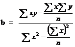
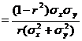
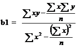
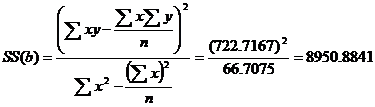

STAM101 :: Lecture 13 :: Regression – definition – fitting of simple linear regression equation – testing the significance of the regression coefficient

Regression is the functional relationship between two variables and of the two variables one may represent cause and the other may represent effect. The variable representing cause is known as independent variable and is denoted by X. The variable X is also known as predictor variable or repressor. The variable representing effect is known as dependent variable and is denoted by Y. Y is also known as predicted variable. The relationship between the dependent and the independent variable may be expressed as a function and such functional relationship is termed as regression. When there are only two variables the functional relationship is known as simple regression and if the relation between the two variables is a straight line I is known a simple linear regression. When there are more than two variables and one of the variables is dependent upon others, the functional relationship is known as multiple regression. The regression line is of the form y=a+bx where a is a constant or intercept and b is the regression coefficient or the slope. The values of ‘a’ and ‘b’ can be calculated by using the method of least squares. An alternate method of calculating the values of a and b are by using the formula:
The regression equation of y on x is given by y = a + bx
The regression coefficient of y on x is given by

and a= – b
The regression line indicates the average value of the dependent variable Y associated with a particular value of independent variable X.
Assumptions
- The x’s are non-random or fixed constants
- At each fixed value of X the corresponding values of Y have a normal distribution about a mean.
- For any given x, the variance of Y is same.
- The values of y observed at different levels of x are completely independent.
Properties of Regression coefficients
- The correlation coefficient is the geometric mean of the two regression coefficients
- Regression coefficients are independent of change of origin but not of scale.
- If one regression coefficient is greater than unit, then the other must be less than unit but not vice versa. ie. both the regression coefficients can be less than unity but both cannot be greater than unity, ie. if b1>1 then b2<1 and if b2>1, then b1<1.
- Also if one regression coefficient is positive the other must be positive (in this case the correlation coefficient is the positive square root of the product of the two regression coefficients) and if one regression coefficient is negative the other must be negative (in this case the correlation coefficient is the negative square root of the product of the two regression coefficients). ie.if b1>0, then b2>0 and if b1<0, then b2<0.
- If θ is the angle between the two regression lines then it is given by
tan θ 
Testing the significance of regression co-efficient
To test the significance of the regression coefficient we can apply either a t test or analysis of variance (F test). The ANOVA table for testing the regression coefficient will be as follows:
Sources of variation |
d.f. |
SS |
MS |
F |
Due to regression |
1 |
SS(b) |
Sb2 |
Sb2 / Se2 |
Deviation from regression |
n-2 |
SS(Y)-SS(b) |
Se2 |
|
Total |
n-1 |
SS(Y) |
|
|
In case of t test the test statistic is given by
t = b / SE (b) where SE (b) = se2 / SS(X)
The regression analysis is useful in predicting the value of one variable from the given values of another variable. Another use of regression analysis is to find out the causal relationship between variables.
Uses of Regression
The regression analysis is useful in predicting the value of one variable from the given value of another variable. Such predictions are useful when it is very difficult or expensive to measure the dependent variable, Y. The other use of the regression analysis is to find out the causal relationship between variables. Suppose we manipulate the variable X and obtain a significant regression of variables Y on the variable X. Thus we can say that there is a causal relationship between the variable X and Y. The causal relationship between nitrogen content of soil and growth rate in a plant, or the dose of an insecticide and mortality of the insect population may be established in this way.
Example 1
From a paddy field, 36 plants were selected at random. The length of panicles(x) and the number of grains per panicle (y) of the selected plants were recorded. The results are given below. Fit a regression line y on x. Also test the significance (or) regression coefficient.
The length of panicles in cm (x) and the number of grains per panicle (y) of paddy plants.
S.No. |
Y |
X |
S.No. |
Y |
X |
S.No. |
Y |
X |
1 |
95 |
22.4 |
13 |
143 |
24.5 |
25 |
112 |
22.9 |
2 |
109 |
23.3 |
14 |
127 |
23.6 |
26 |
131 |
23.9 |
3 |
133 |
24.1 |
15 |
92 |
21.1 |
27 |
147 |
24.8 |
4 |
132 |
24.3 |
16 |
88 |
21.4 |
28 |
90 |
21.2 |
5 |
136 |
23.5 |
17 |
99 |
23.4 |
29 |
110 |
22.2 |
6 |
116 |
22.3 |
18 |
129 |
23.4 |
30 |
106 |
22.7 |
7 |
126 |
23.9 |
19 |
91 |
21.6 |
31 |
127 |
23.0 |
8 |
124 |
24.0 |
20 |
103 |
21.4 |
32 |
145 |
24.0 |
9 |
137 |
24.9 |
21 |
114 |
23.3 |
33 |
85 |
20.6 |
10 |
90 |
20.0 |
22 |
124 |
24.4 |
34 |
94 |
21.0 |
11 |
107 |
19.8 |
23 |
143 |
24.4 |
35 |
142 |
24.0 |
12 |
108 |
22.0 |
24 |
108 |
22.5 |
36 |
111 |
23.1 |
Null Hypothesis Ho: regression coefficient is not significant.
Alternative Hypothesis H1: regression coefficient is significant.

The regression line y on x is  =a+ b
=a+ b 

=a+ b
115.94 = a + (11.5837)(22.86)
a=115.94-264.8034
a=-148.8633
The fitted regression line is y =-148.8633+11.5837x

Anova Table
Sources of Variation |
d.f. |
SS |
MSS |
F |
Regression |
1 |
8950.8841 |
8950.8841 |
90.7093 |
Error |
36-2=34 |
3355.0048 |
98.6766 |
|
Total |
35 |
12305.8889 |
|
For t-test
Table Value:
t(n-2) d.f.=t34 d.f at 5% level=2.032
t >ttab. we reject Ho.
Hence t is significant.
| Download this lecture as PDF here |